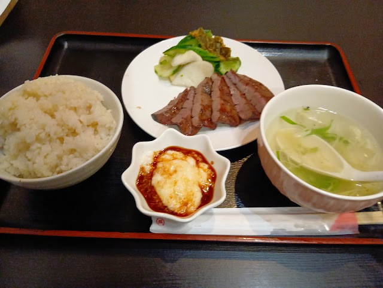
| 営業時間 | 月・水・木・金・土・日 11:30〜21:00 |
|---|---|
| 定休日 | 火曜 |
| 住所 | 宮城県仙台市青葉区一番町４丁目４−１３ |
| 予約 | 要確認 — ☎ 022-225-4641 ／ 公式サイト |
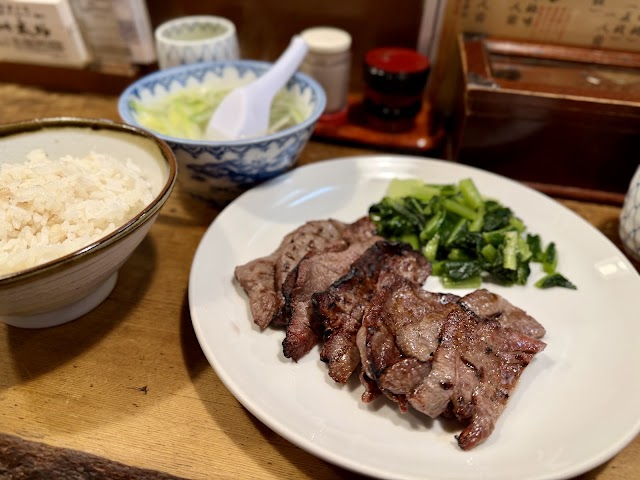
| 営業時間 | 火・水・木・金・土・日 11:30〜20:00 |
|---|---|
| 定休日 | 月曜 |
| 住所 | 宮城県仙台市青葉区国分町２丁目１１−１１ 千松島ビル 1F |
| 予約 | 要確認 — ☎ 022-262-2539 ／ 公式サイト |
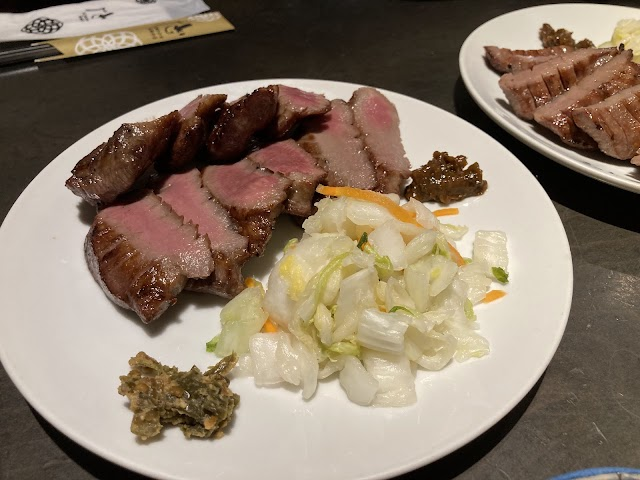
| 営業時間 | 月・火・水・木・金・土・日 11:30〜15:00, 17:00〜22:30 |
|---|---|
| 定休日 | なし(要最終確認) |
| 住所 | 宮城県仙台市青葉区中央１丁目６−１ ハーブ仙台 5F |
| 予約 | 可 — ☎ 022-266-5077 ／ 公式サイト |
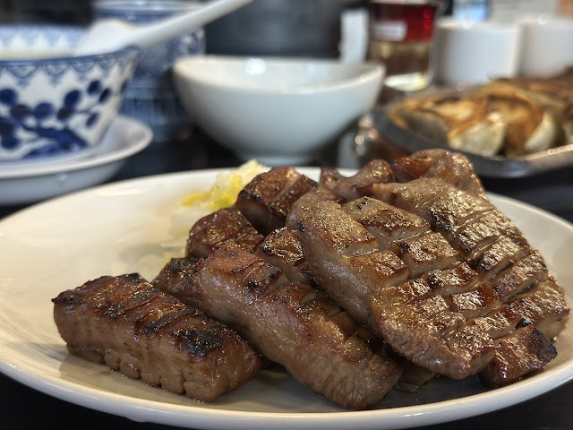
| 営業時間 | 月・火・水・木・金・土・日 11:00〜23:00 |
|---|---|
| 定休日 | なし(要最終確認) |
| 住所 | 宮城県仙台市青葉区中央１丁目８−３８ ３Ｆ |
| 予約 | 可 — ☎ 022-723-1877 ／ 公式サイト |
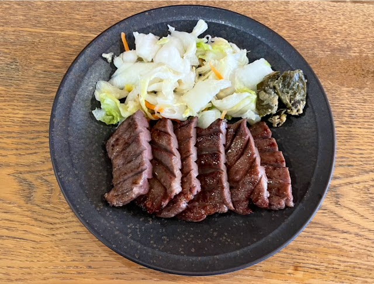
| 営業時間 | 月・火・水・木・金・土・日 11:00〜22:00 |
|---|---|
| 定休日 | なし(要最終確認) |
| 住所 | 宮城県仙台市青葉区中央２丁目１−２１ Ｅｖｅｒ－ｉ中央 3F |
| 予約 | 可 — ☎ 022-265-2080 ／ 公式サイト |
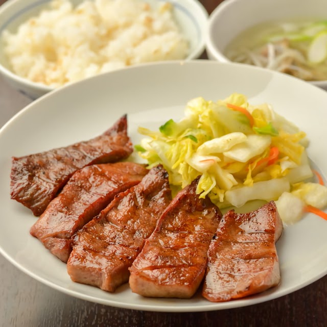
| 営業時間 | 月・火・水・木・金 11:30〜14:00, 17:00〜22:00 ／ 土・日 11:00〜14:00, 17:00〜22:00 |
|---|---|
| 定休日 | なし(要最終確認) |
| 住所 | 宮城県仙台市青葉区一番町３丁目８−１４ 鈴喜陶器店 地下1階 |
| 予約 | 可 — ☎ 022-268-7067 ／ 公式サイト |
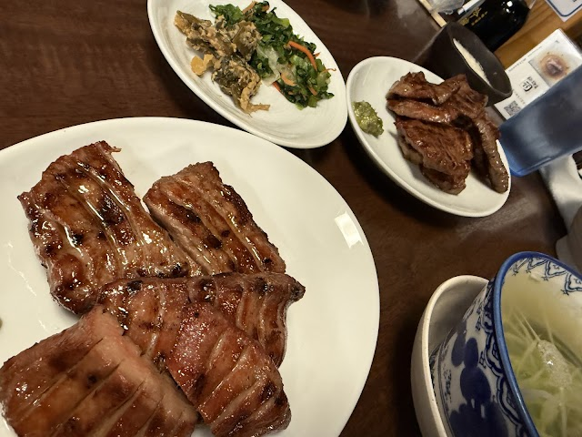
| 営業時間 | 月・火・水・木・金・土 17:00〜23:00 |
|---|---|
| 定休日 | 日曜 |
| 住所 | 宮城県仙台市青葉区一番町４丁目４−６ 虎横ビル ２階 |
| 予約 | 可 — ☎ 022-266-3944 ／ 公式サイト |
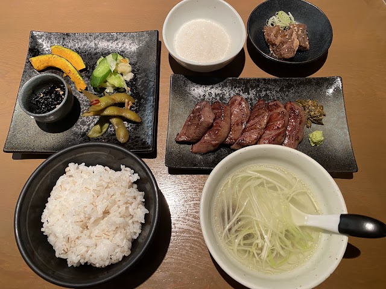
| 営業時間 | 月 11:30〜14:30 ／ 水・木・金・土・日 11:30〜14:30, 17:00〜20:30 |
|---|---|
| 定休日 | 火曜 |
| 住所 | 宮城県仙台市泉区泉中央４丁目１９−３ |
| 予約 | 要確認 — ☎ 022-346-1519 ／ 公式サイト |
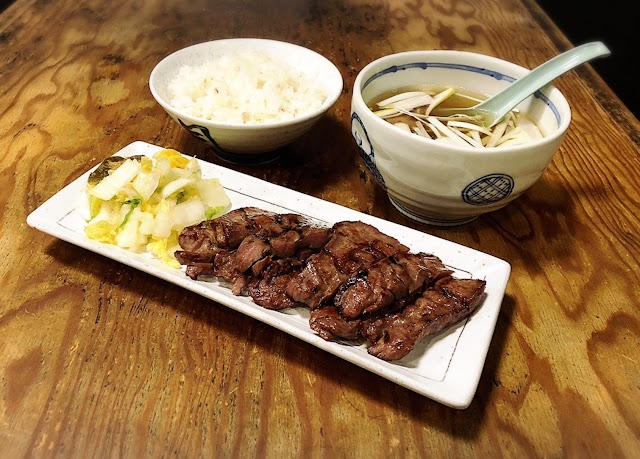
| 営業時間 | 月・火・木・土 11:30〜13:30, 18:00〜19:30 ／ 水・金 11:30〜13:30 |
|---|---|
| 定休日 | 日曜 |
| 住所 | 宮城県仙台市青葉区国分町１丁目４−２１ |
| 予約 | 要確認 — ☎ 022-261-4026 ／ 公式サイト |
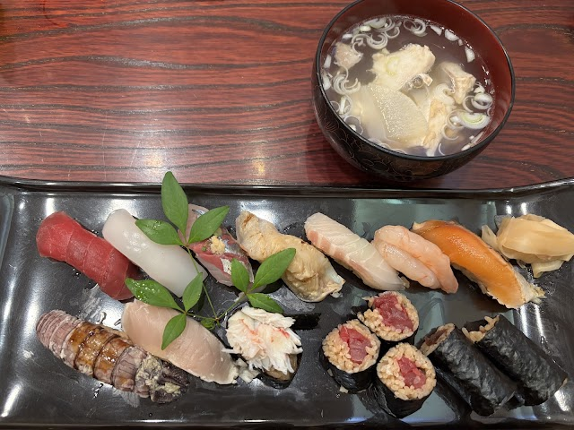
| 営業時間 | 月・火・水・木・金・土 12:00〜13:00, 17:00〜21:00 |
|---|---|
| 定休日 | 日曜 |
| 住所 | 宮城県仙台市青葉区一番町２丁目３−４１ |
| 予約 | 可 — ☎ 022-222-0354 ／ 公式サイト |
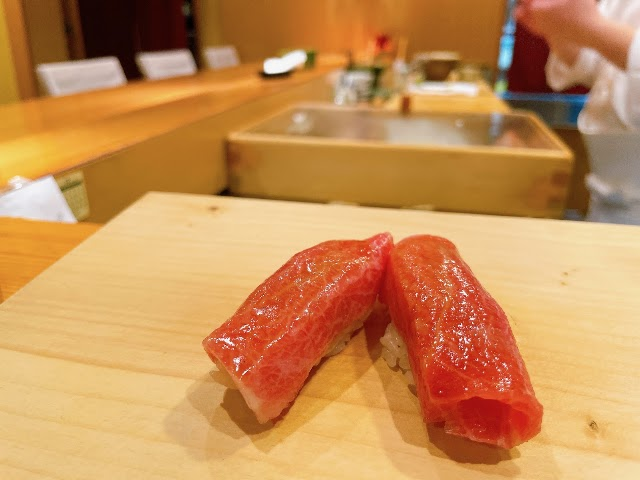
| 営業時間 | 月・火・水・木・金・土 17:30〜22:00 |
|---|---|
| 定休日 | 日曜 |
| 住所 | 宮城県仙台市青葉区国分町２丁目１２−１９ |
| 予約 | 可 — ☎ 022-714-7147 |
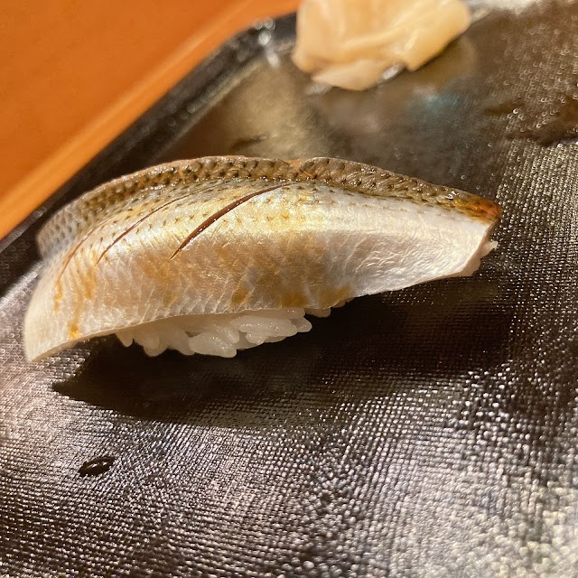
| 営業時間 | 月・火・水・木・金・土 17:30〜22:00 |
|---|---|
| 定休日 | 日曜 |
| 住所 | 宮城県仙台市青葉区国分町１丁目３−２１ エビスヤパークサイド １階 |
| 予約 | 可 — ☎ 022-215-2844 |
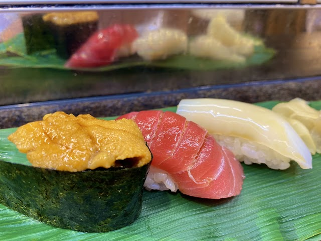
| 営業時間 | 月・火・水・木・金・土・日 11:00〜21:30 |
|---|---|
| 定休日 | なし(要最終確認) |
| 住所 | 宮城県仙台市青葉区中央１丁目１ ３階 仙台駅 |
| 予約 | 要確認 — ☎ 022-214-6180 ／ 公式サイト |
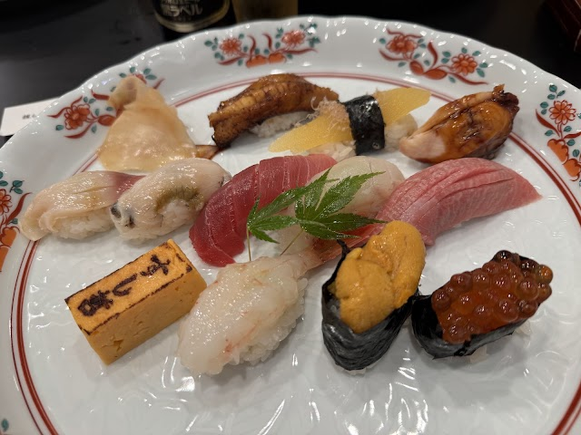
| 営業時間 | 月・火・水・木・金・土・日 11:00〜22:00 |
|---|---|
| 定休日 | なし(要最終確認) |
| 住所 | Miyagi, Sendai, Aoba Ward, Central, 1 Chome−1−1 仙台エスパル Ｂ1エキチカダイニング |
| 予約 | 可 — ☎ 022-716-1075 ／ 公式サイト |
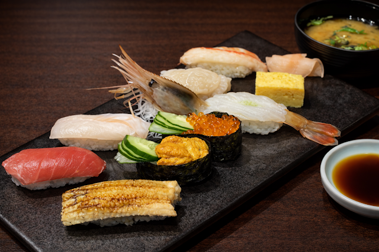
| 営業時間 | 火・水・木・金・土 11:30〜14:00, 17:30〜21:00 ／ 日 11:30〜14:00, 17:30〜20:30 |
|---|---|
| 定休日 | 月曜 |
| 住所 | 宮城県仙台市青葉区一番町３丁目３−２５ たちばなビル 5F |
| 予約 | 可 — ☎ 022-223-3706 ／ 公式サイト |
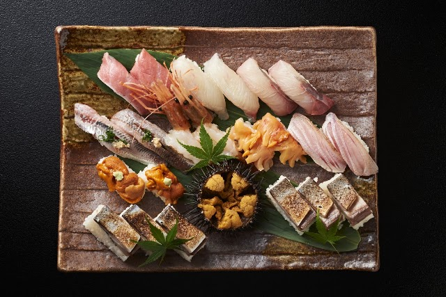
| 営業時間 | 月・木・金・土・日 11:00〜14:00, 17:00〜20:30 |
|---|---|
| 定休日 | 火・水曜 |
| 住所 | 宮城県仙台市太白区あすと長町１丁目４−３０ KHB東日本放送ぐりりスポーツパーク103 |
| 予約 | 可 — ☎ 022-395-4303 ／ 公式サイト |
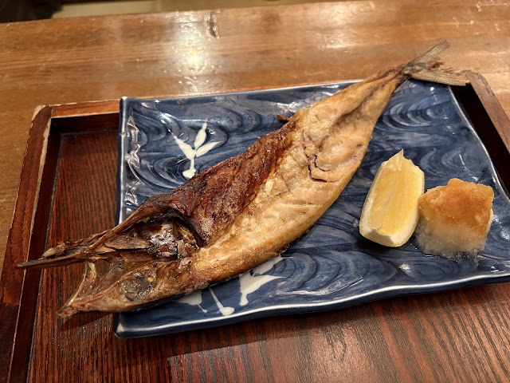
| 営業時間 | 月・火・水・木・金・土 17:00〜23:00 ／ 日 17:00〜22:00 |
|---|---|
| 定休日 | なし(要最終確認) |
| 住所 | 宮城県仙台市青葉区国分町２丁目１０−２８ YSビックビル 1階B号室 |
| 予約 | 可 — ☎ 022-266-0897 ／ 公式サイト |
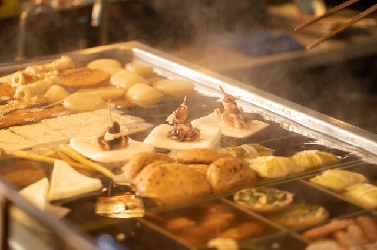
| 営業時間 | 火・水・木 18:00〜21:20 ／ 金・土 18:00〜22:20 |
|---|---|
| 定休日 | 月・日曜 |
| 住所 | 宮城県仙台市青葉区一番町４丁目１０−８ |
| 予約 | 可 — ☎ 022-222-3830 ／ 公式サイト |
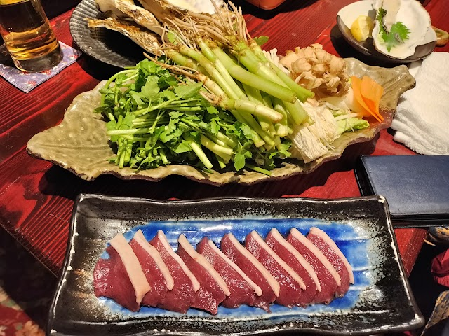
| 営業時間 | 月・火・水・木・金 12:00〜15:00, 17:00〜22:00 ／ 土・日 12:00〜22:00 |
|---|---|
| 定休日 | なし(要最終確認) |
| 住所 | 宮城県仙台市青葉区中央３丁目６−１２ 仙台南町通ビル ２F |
| 予約 | 可 — ☎ 022-217-1660 ／ 公式サイト |
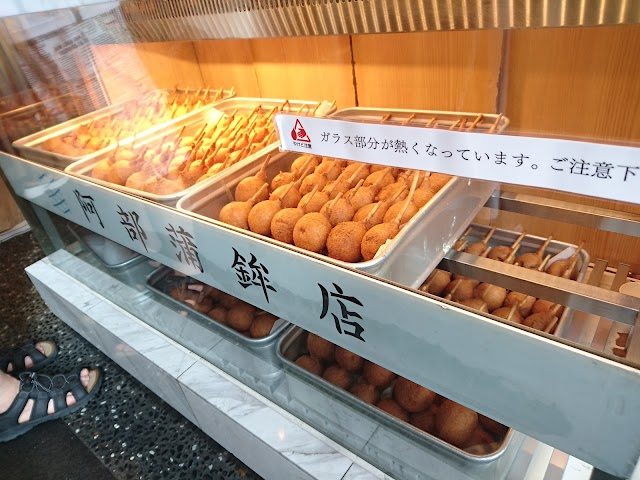
| 営業時間 | 月・火・水・木・金・土・日 10:00〜18:30 |
|---|---|
| 定休日 | なし(要最終確認) |
| 住所 | 宮城県仙台市青葉区中央２丁目３−１８ 阿部蒲鉾店本社ビル |
| 予約 | 要確認 — ☎ 022-221-7121 ／ 公式サイト |
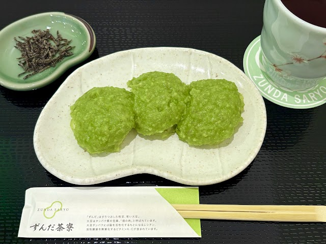
| 営業時間 | 月・火・水・木・金・土・日 10:00〜21:00 |
|---|---|
| 定休日 | なし(要最終確認) |
| 住所 | 宮城県仙台市青葉区中央１丁目１−１ 仙台駅3F |
| 予約 | 要確認 — ☎ 022-715-1081 ／ 公式サイト |
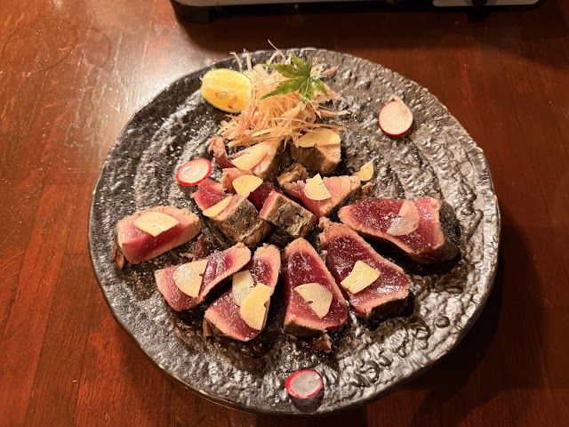
| 営業時間 | 月・火・水・木・金・土・日 16:00〜0:00 |
|---|---|
| 定休日 | なし(要最終確認) |
| 住所 | 宮城県仙台市青葉区中央１丁目８−３８ AKビル 4F |
| 予約 | 可 — ☎ 022-268-2488 ／ 公式サイト |
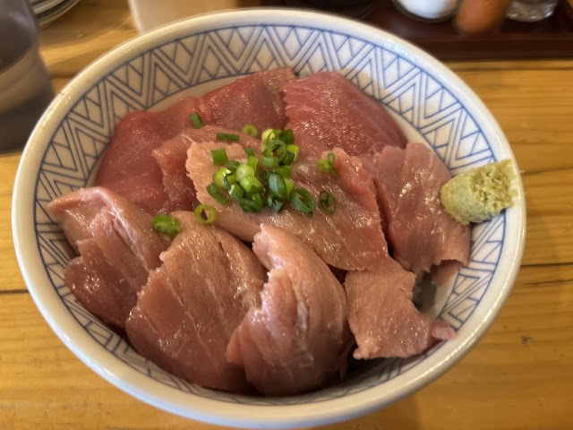
| 営業時間 | 月・火・水・木・金・土 11:00〜14:30, 17:00〜22:00 ／ 日 11:00〜14:30, 15:00〜20:30 |
|---|---|
| 定休日 | なし(要最終確認) |
| 住所 | 宮城県仙台市青葉区一番町４丁目５−１６ 東一市場商業協同組合 １階 |
| 予約 | 要確認 — ☎ 022-796-3727 ／ 公式サイト |
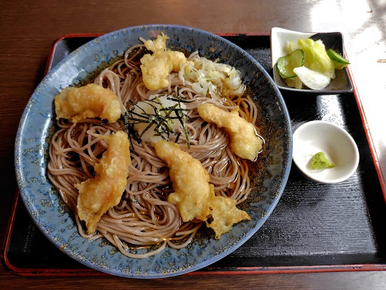
| 営業時間 | 月・木・金・土・日 11:00〜15:00 |
|---|---|
| 定休日 | 火・水曜 |
| 住所 | 宮城県仙台市若林区五十人町１６ |
| 予約 | 要確認 — ☎ 022-286-3458 ／ 公式サイト |
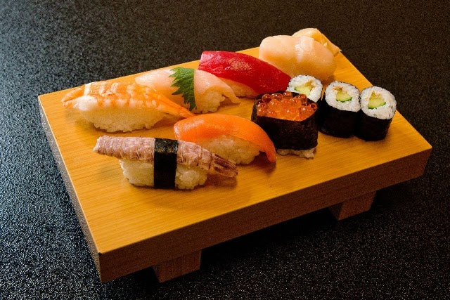
| 営業時間 | 月・木・金・土・日 11:45〜13:30, 17:00〜21:30 |
|---|---|
| 定休日 | 火・水曜 |
| 住所 | 宮城県仙台市若林区河原町１丁目５−１５ |
| 予約 | 可 — ☎ 022-222-8290 ／ 公式サイト |
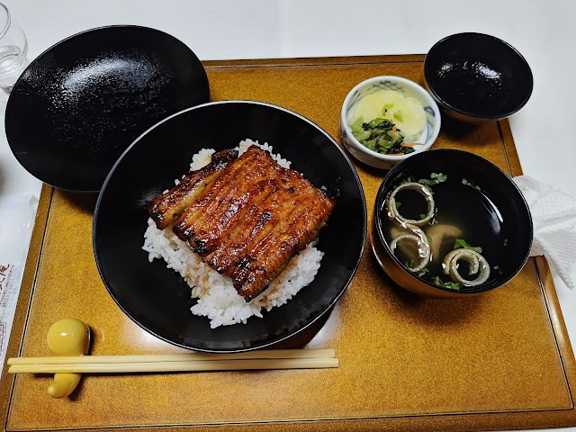
| 営業時間 | 月・火・水・木・金 11:00〜15:00, 16:30〜20:00 ／ 土・日 11:00〜20:00 |
|---|---|
| 定休日 | なし(要最終確認) |
| 住所 | 宮城県仙台市青葉区一番町１丁目２−２１ |
| 予約 | 可 — ☎ 022-266-2520 ／ 公式サイト |
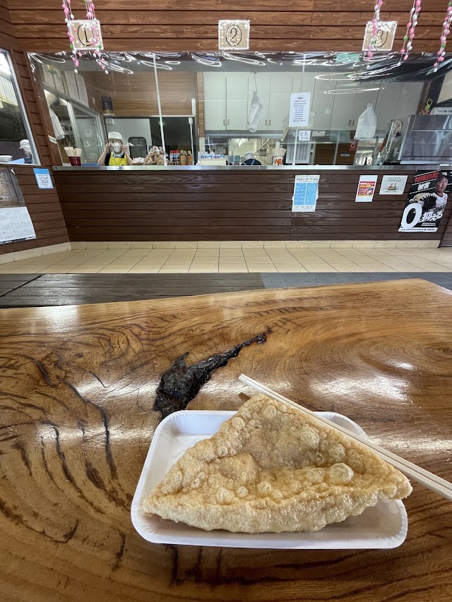
| 営業時間 | 火・水・木・金・土・日 9:00〜16:00 |
|---|---|
| 定休日 | 月曜 |
| 住所 | 宮城県仙台市青葉区大倉下道１−２ |
| 予約 | 要確認 — ☎ 022-393-2035 ／ 公式サイト |
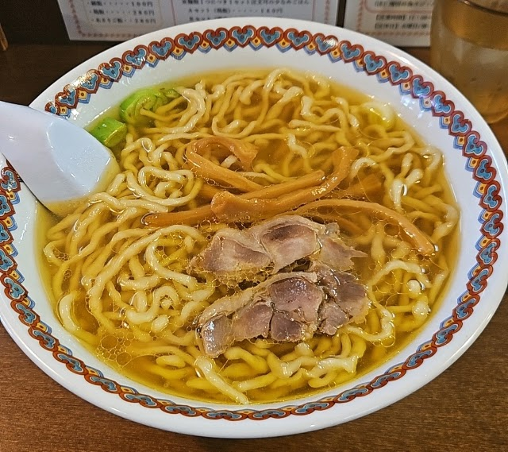
| 営業時間 | 月・火・木・金・土・日 11:00〜15:00 |
|---|---|
| 定休日 | 水曜 |
| 住所 | 宮城県仙台市青葉区国分町３丁目８−１２ |
| 予約 | 要確認 — ☎ 022-265-5907 ／ 公式サイト |
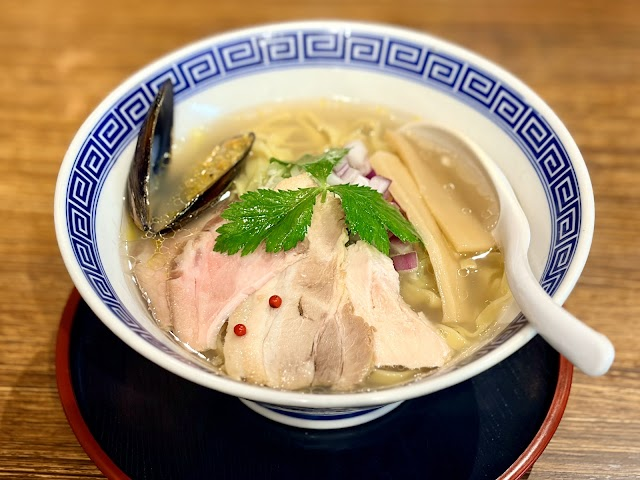
| 営業時間 | 月・火・水・木・日 11:00〜21:00 ／ 金・土 11:00〜22:00 |
|---|---|
| 定休日 | なし(要最終確認) |
| 住所 | 宮城県仙台市青葉区一番町２丁目２−１１ ＴＫビル １階 |
| 予約 | 要確認 — ☎ 022-204-4890 ／ 公式サイト |
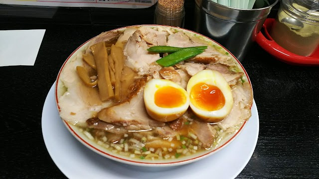
| 営業時間 | 火・水・木・金 11:33〜15:33, 17:03〜20:03 ／ 土・日 11:33〜20:03 |
|---|---|
| 定休日 | 月曜 |
| 住所 | 宮城県仙台市青葉区栗生５丁目２２−３ |
| 予約 | 要確認 — ☎ 022-392-5572 ／ 公式サイト |
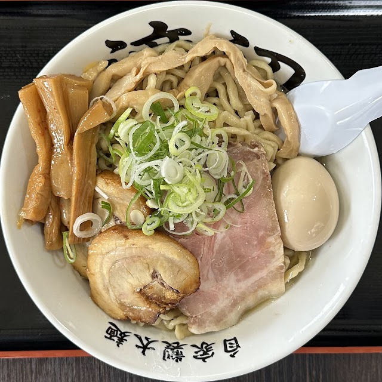
| 営業時間 | 月・火・水・金・土・日 11:00〜14:30 |
|---|---|
| 定休日 | 木曜 |
| 住所 | 宮城県仙台市泉区市名坂新道１８−１ |
| 予約 | 要確認 — 公式サイト |
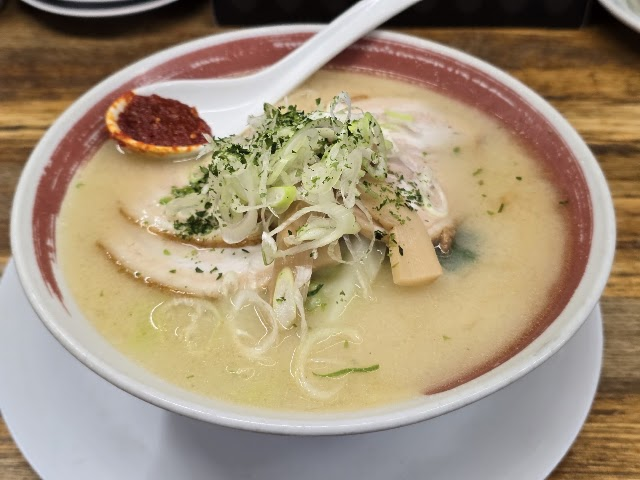
| 営業時間 | 月・火・木・金 11:30〜15:00 ／ 土・日 11:30〜19:30 |
|---|---|
| 定休日 | 水曜 |
| 住所 | 宮城県仙台市若林区中倉１丁目７−３０ |
| 予約 | 要確認 — ☎ 022-283-4044 |
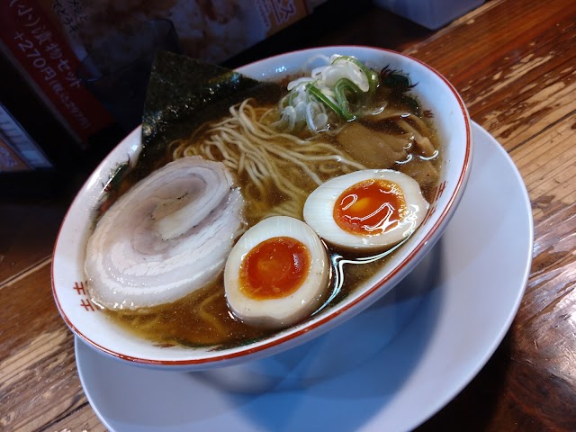
| 営業時間 | 火・水・木・金 11:30〜15:30, 17:30〜21:00 ／ 土・日 11:30〜21:00 |
|---|---|
| 定休日 | 月曜 |
| 住所 | 宮城県仙台市太白区向山４丁目２６−１９ |
| 予約 | 要確認 — ☎ 022-263-1802 ／ 公式サイト |
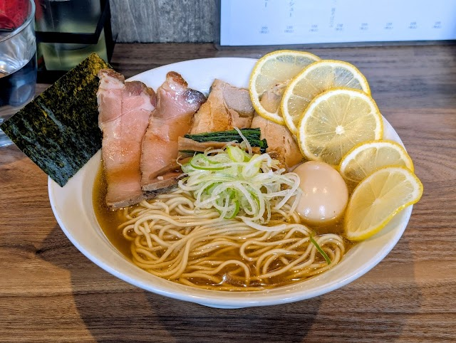
| 営業時間 | 火・水・木・金・土 11:00〜14:30, 17:30〜20:30 ／ 日 11:00〜14:30 |
|---|---|
| 定休日 | 月曜 |
| 住所 | 宮城県仙台市若林区荒町１５３ |
| 予約 | 要確認 — ☎ 022-266-8037 ／ 公式サイト |
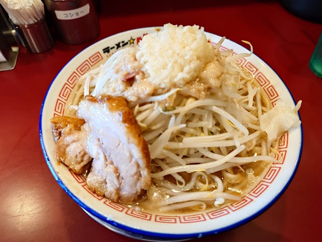
| 営業時間 | 月・火・水・木・金 11:00〜15:00, 17:00〜22:00 ／ 土・日 11:00〜22:00 |
|---|---|
| 定休日 | なし(要最終確認) |
| 住所 | 宮城県仙台市宮城野区東仙台４丁目６−３１ |
| 予約 | 要確認 — ☎ 022-385-6383 ／ 公式サイト |
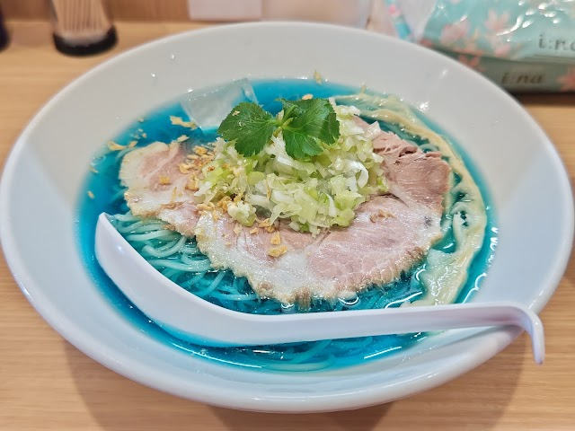
| 営業時間 | 月・水・木・金 11:30〜14:30, 17:30〜20:30 ／ 土 11:30〜14:30, 17:30〜20:00 ／ 日 11:30〜14:30, 17:00〜20:00 |
|---|---|
| 定休日 | 火曜 |
| 住所 | 宮城県仙台市青葉区八幡１丁目４−２６ |
| 予約 | 要確認 — ☎ 022-397-6578 ／ 公式サイト |
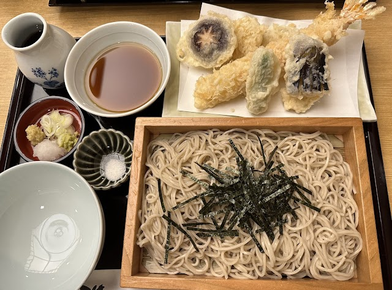
| 営業時間 | 月・火・水・木・金・土・日 11:00〜20:00 |
|---|---|
| 定休日 | なし(要最終確認) |
| 住所 | 宮城県仙台市青葉区一番町４丁目９−２４ |
| 予約 | 要確認 — ☎ 022-263-2515 ／ 公式サイト |
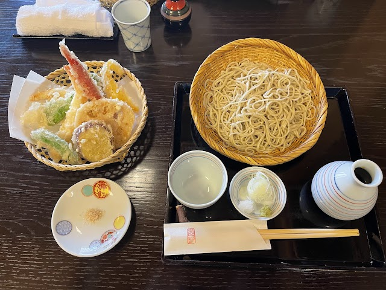
| 営業時間 | 月・火・水・金 11:30〜14:30 ／ 土・日 11:30〜14:30, 17:00〜19:30 |
|---|---|
| 定休日 | 木曜 |
| 住所 | 宮城県仙台市青葉区国見ケ丘３丁目１−９ |
| 予約 | 可 — ☎ 022-719-3161 |
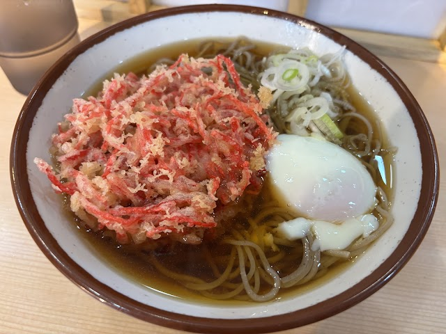
| 営業時間 | 月・火・水・木・金・土 7:00〜1:00 ／ 日 7:00〜22:00 |
|---|---|
| 定休日 | なし(要最終確認) |
| 住所 | 宮城県仙台市青葉区一番町４丁目５−１９ |
| 予約 | 要確認 — ☎ 022-386-3089 ／ 公式サイト |
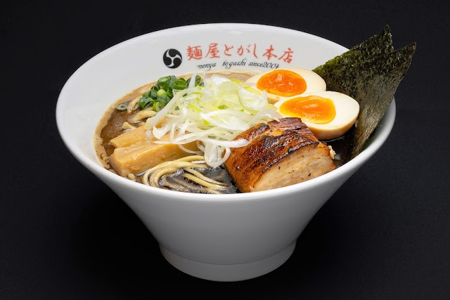
| 営業時間 | 月・火・水・木・金 11:30〜14:30, 17:30〜22:00 ／ 土・日 11:00〜15:00, 17:30〜21:00 |
|---|---|
| 定休日 | なし(要最終確認) |
| 住所 | 宮城県仙台市若林区新寺２丁目１−１ サンシャイン菊平ビル 1階 |
| 予約 | 要確認 — ☎ 022-385-7390 ／ 公式サイト |
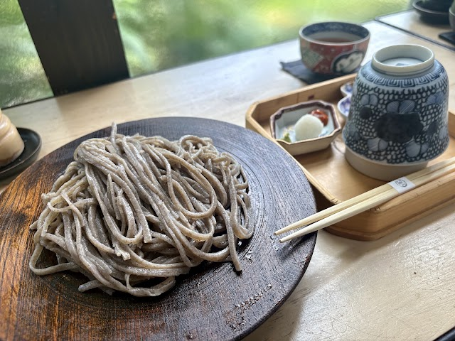
| 営業時間 | 月・火・水・木・金・土・日 11:00〜18:00 |
|---|---|
| 定休日 | なし(要最終確認) |
| 住所 | 宮城県仙台市太白区向山１丁目１−１ |
| 予約 | 要確認 — ☎ 022-395-8074 ／ 公式サイト |
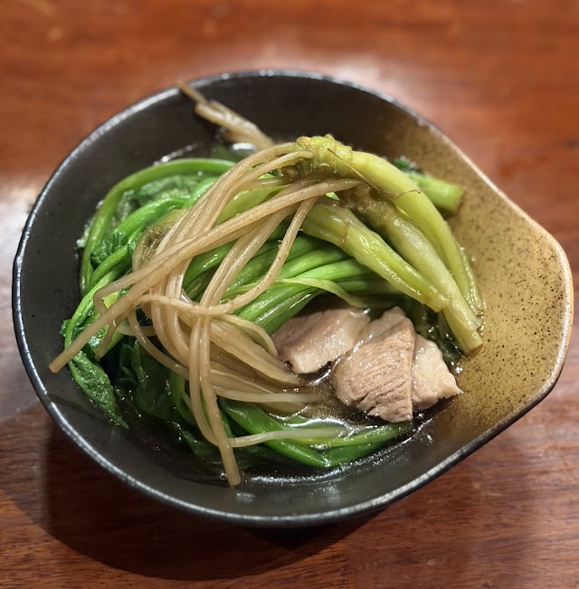
| 営業時間 | 月・火・水・木・金・土 17:00〜22:00 |
|---|---|
| 定休日 | 日曜 |
| 住所 | 宮城県仙台市青葉区立町６−１６ |
| 予約 | 可 — ☎ 022-217-8455 ／ 公式サイト |
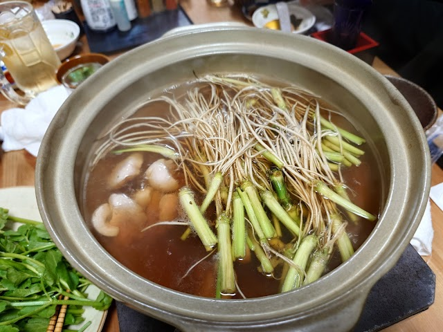
| 営業時間 | 月・火・木・金・土 17:00〜22:00 ／ 日 17:00〜21:00 |
|---|---|
| 定休日 | 水曜 |
| 住所 | 宮城県仙台市青葉区国分町２丁目１−２３ 谷風ビル地下 |
| 予約 | 可 — ☎ 022-721-2780 ／ 公式サイト |
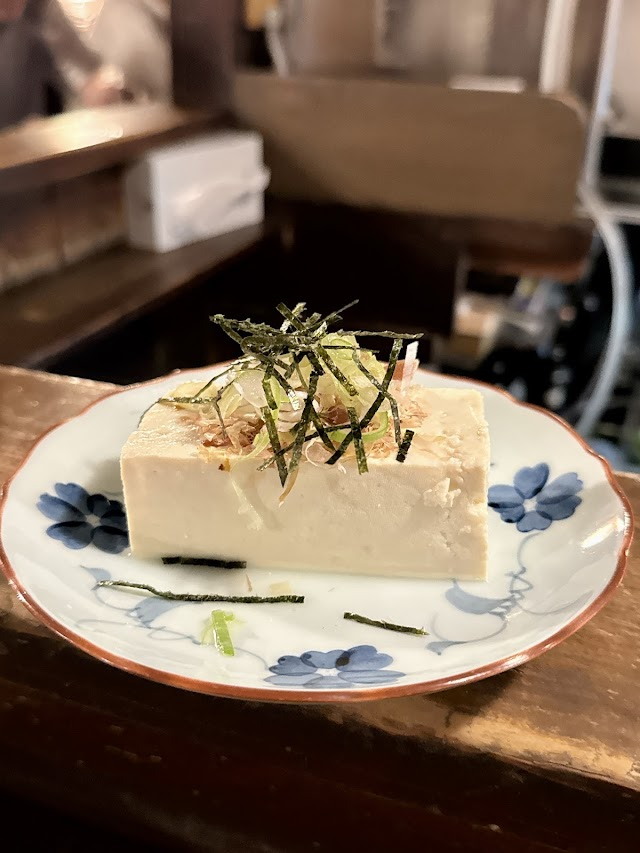
| 営業時間 | 火・水・木・金・土 17:10〜22:00 |
|---|---|
| 定休日 | 月・日曜 |
| 住所 | 宮城県仙台市青葉区一番町２丁目４−８ |
| 予約 | 要確認 — ☎ 022-222-8485 ／ 公式サイト |
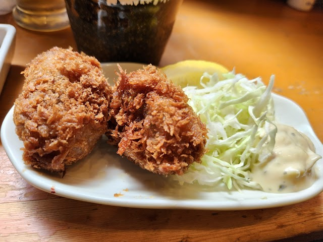
| 営業時間 | 月・火 11:00〜15:00 ／ 木・金・土・日 11:00〜15:00, 17:00〜21:00 |
|---|---|
| 定休日 | 水曜 |
| 住所 | 宮城県仙台市青葉区立町２６−１６ 早坂ビル 1F |
| 予約 | 可 — ☎ 050-5485-7620 ／ 公式サイト |
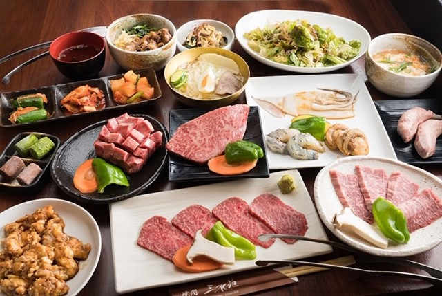
| 営業時間 | 月・火・水・木 11:30〜14:00, 17:00〜0:00 ／ 金 11:30〜14:00, 17:00〜1:00 ／ 土 11:30〜1:00 ／ 日 11:30〜23:00 |
|---|---|
| 定休日 | なし(要最終確認) |
| 住所 | 宮城県仙台市青葉区国分町２丁目２−８ Renato広瀬通 １F |
| 予約 | 可 — ☎ 022-796-2988 ／ 公式サイト |
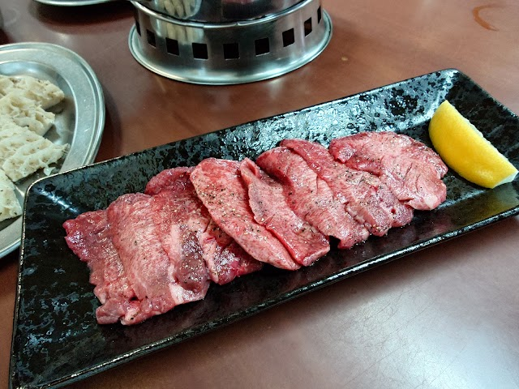
| 営業時間 | 月・火・水・木 17:30〜23:00 ／ 金・土・日 17:00〜23:00 |
|---|---|
| 定休日 | なし(要最終確認) |
| 住所 | 宮城県仙台市青葉区二日町１０−３０ |
| 予約 | 可 — ☎ 022-215-4129 |
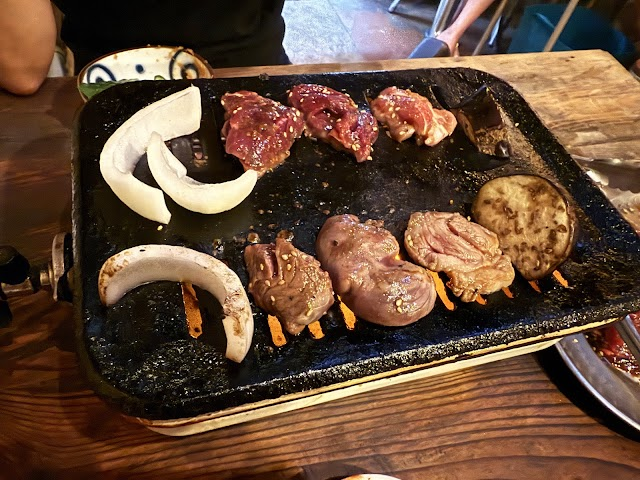
| 営業時間 | 火・水・木・金・土・日 17:00〜0:00 |
|---|---|
| 定休日 | 月曜 |
| 住所 | 宮城県仙台市青葉区一番町２丁目３−２８−８４ |
| 予約 | 可 — ☎ 022-215-4191 |
| 営業時間 | 木・金・土・日 17:00〜23:00 |
|---|---|
| 定休日 | 月・火・水曜 |
| 住所 | 宮城県仙台市青葉区木町１１−２ |
| 予約 | 可 — 公式サイト |
| 営業時間 | 月・火・木・金 17:00〜0:00 ／ 土・日 16:00〜0:00 |
|---|---|
| 定休日 | 水曜 |
| 住所 | 宮城県仙台市青葉区大町２丁目３−７ 1F |
| 予約 | 可 — ☎ 022-796-1675 ／ 公式サイト |
| 営業時間 | 月・火・木・金・土 11:00〜14:00, 17:00〜2:00 ／ 水 17:00〜2:00 ／ 日 17:00〜0:00 |
|---|---|
| 定休日 | なし(要最終確認) |
| 住所 | 宮城県仙台市宮城野区榴岡１丁目７−１５ サニービル ２F |
| 予約 | 可 — ☎ 022-291-0424 ／ 公式サイト |
| 営業時間 | 月・火・水・木・金・土 17:30〜23:00 |
|---|---|
| 定休日 | 日曜 |
| 住所 | 宮城県仙台市青葉区一番町２丁目３−３７ 文化横町 内 |
| 予約 | 可 — ☎ 022-266-0604 ／ 公式サイト |
| 営業時間 | 月・火・水・木・金・土・日 11:00〜14:00, 17:15〜22:00 |
|---|---|
| 定休日 | なし(要最終確認) |
| 住所 | 宮城県仙台市青葉区上杉１丁目７−３４ 鈴木ビル 1F |
| 予約 | 可 — ☎ 022-263-5735 ／ 公式サイト |
| 営業時間 | 月・火・水・木 11:30〜14:30 ／ 金 11:30〜14:30, 17:30〜20:00 ／ 土 12:00〜14:30, 17:30〜20:00 |
|---|---|
| 定休日 | 日曜 |
| 住所 | 宮城県仙台市青葉区一番町２丁目７−３ 4F |
| 予約 | 可 — ☎ 022-267-6975 |
| 営業時間 | 月・火・水・木・金・土・日 10:00〜21:30 |
|---|---|
| 定休日 | なし(要最終確認) |
| 住所 | 宮城県仙台市青葉区中央１丁目１−１ JR仙台駅 3F 新幹線南改札前 |
| 予約 | 要確認 — 公式サイト |
| 営業時間 | 火・水・金・土・日 11:00〜14:00, 17:00〜19:30 ／ 木 11:00〜14:00 |
|---|---|
| 定休日 | 月曜 |
| 住所 | 宮城県仙台市泉区南中山１丁目１−１２ カープル |
| 予約 | 可 — ☎ 022-379-2983 |
| 営業時間 | 月・火・水・木・金 11:30〜14:00, 18:00〜22:00 ／ 土 18:00〜22:00 |
|---|---|
| 定休日 | 日曜 |
| 住所 | 宮城県仙台市青葉区本町２丁目８−３１ |
| 予約 | 可 — ☎ 022-398-6653 ／ 公式サイト |
| 営業時間 | 月・水・木・金・土・日 11:30〜14:00, 18:00〜22:00 |
|---|---|
| 定休日 | 火曜 |
| 住所 | 宮城県仙台市青葉区本町１丁目６−２５ ライオンズマンション本町第2 1階 |
| 予約 | 可 — ☎ 022-209-3551 ／ 公式サイト |
| 営業時間 | 月・木・金・土・日 11:30〜14:00, 17:30〜20:30 |
|---|---|
| 定休日 | 火・水曜 |
| 住所 | 宮城県仙台市青葉区二日町１７−３１ プレシャス １階 |
| 予約 | 可 — ☎ 022-290-1138 ／ 公式サイト |
| 営業時間 | 火・水・木・金 18:00〜23:00 ／ 土 14:00〜23:00 ／ 日 14:00〜20:00 |
|---|---|
| 定休日 | 月曜 |
| 住所 | 宮城県仙台市青葉区本町２丁目１９−２６ ＴＫビル 2F |
| 予約 | 可 — ☎ 022-796-4337 ／ 公式サイト |
| 営業時間 | 月・火・水・木・金・土 11:30〜20:30 ／ 日 11:30〜16:00 |
|---|---|
| 定休日 | なし(要最終確認) |
| 住所 | 宮城県仙台市宮城野区榴岡４丁目１２−２ オダシマビル 1F |
| 予約 | 可 — ☎ 022-349-8588 ／ 公式サイト |
| 営業時間 | 月・水・木・金・土・日 11:00〜14:00, 17:00〜21:30 |
|---|---|
| 定休日 | 火曜 |
| 住所 | 宮城県仙台市太白区長町５丁目２−６ 森民ビル 2階 |
| 予約 | 可 — ☎ 022-796-6165 ／ 公式サイト |
| 営業時間 | 月・火・水・木・金・土・日 9:30〜18:30 |
|---|---|
| 定休日 | なし(要最終確認) |
| 住所 | 宮城県仙台市青葉区一番町２丁目５−１ 2F |
| 予約 | 要確認 — ☎ 022-222-5325 ／ 公式サイト |
| 営業時間 | 月・火・水・木・金・土 11:30〜17:00, 17:30〜21:00 |
|---|---|
| 定休日 | 日曜 |
| 住所 | 宮城県仙台市青葉区一番町１丁目１−３０ 南町通有楽館ビルディング B1F |
| 予約 | 要確認 — ☎ 022-262-1980 ／ 公式サイト |
| 営業時間 | 月・火・水・木・金 8:00〜20:00 ／ 土 8:00〜18:00 |
|---|---|
| 定休日 | 日曜 |
| 住所 | 宮城県仙台市青葉区国分町１丁目３−２５ |
| 予約 | 要確認 — ☎ 022-262-6890 |
| 営業時間 | 火・水・木・金・土・日 8:00〜19:00 |
|---|---|
| 定休日 | 月曜 |
| 住所 | 宮城県仙台市泉区泉中央１丁目９−４ レジュイール泉 １Ｆ |
| 予約 | 要確認 — ☎ 022-778-5489 ／ 公式サイト |
| 営業時間 | 火・水・木・金・土 7:00〜14:00, 17:30〜23:30 ／ 日 7:00〜16:00 |
|---|---|
| 定休日 | 月曜 |
| 住所 | 宮城県仙台市青葉区昭和町５−１９ |
| 予約 | 要確認 — ☎ 022-728-6575 ／ 公式サイト |
| 営業時間 | 火・水・木・金・土・日 10:00〜18:00 |
|---|---|
| 定休日 | 月曜 |
| 住所 | 宮城県仙台市青葉区霊屋下１０−２７ ロジェあいはら |
| 予約 | 要確認 — ☎ 022-208-3892 ／ 公式サイト |
| 営業時間 | 月・火・木・金・土・日 11:00〜15:00 |
|---|---|
| 定休日 | 水曜 |
| 住所 | 宮城県仙台市青葉区八幡２丁目２−８ |
| 予約 | 可 — ☎ 022-341-0849 ／ 公式サイト |
| 営業時間 | 火・水・木・金・土・日 11:00〜17:30 |
|---|---|
| 定休日 | 月曜 |
| 住所 | 宮城県仙台市青葉区一番町４丁目５−４１ |
| 予約 | 要確認 — ☎ 022-223-3618 |
| 営業時間 | 月・火・水・木・金・土・日 10:00〜19:30 |
|---|---|
| 定休日 | なし(要最終確認) |
| 住所 | 宮城県仙台市青葉区中央２丁目５−９ 庄文堂ビル １Ｆ |
| 予約 | 要確認 — ☎ 022-261-1351 ／ 公式サイト |
| 営業時間 | 火・水・木・金・土・日 11:00〜14:30 |
|---|---|
| 定休日 | 月曜 |
| 住所 | 宮城県仙台市青葉区立町２３−１４ スクエアビル ３階 |
| 予約 | 要確認 — ☎ 022-346-9027 ／ 公式サイト |
| 営業時間 | 月・火・水・木・金・土・日 10:00〜18:00 |
|---|---|
| 定休日 | なし(要最終確認) |
| 住所 | 宮城県仙台市青葉区一番町２丁目３−３３ 第八藤榮サンモール一番町 1階 |
| 予約 | 要確認 — ☎ 022-399-8880 ／ 公式サイト |
| 営業時間 | 月・火・木・金・土・日 9:00〜19:00 |
|---|---|
| 定休日 | 水曜 |
| 住所 | 宮城県仙台市太白区秋保町湯元薬師２３ |
| 予約 | 要確認 — ☎ 022-398-2101 ／ 公式サイト |
本ガイドは個人利用目的で作成。掲載情報は2026年8月時点の調査に基づく。写真出典: Google Maps投稿写真(©各投稿者/Google)。